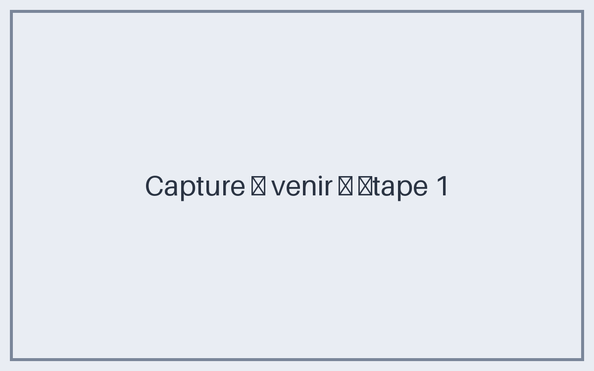
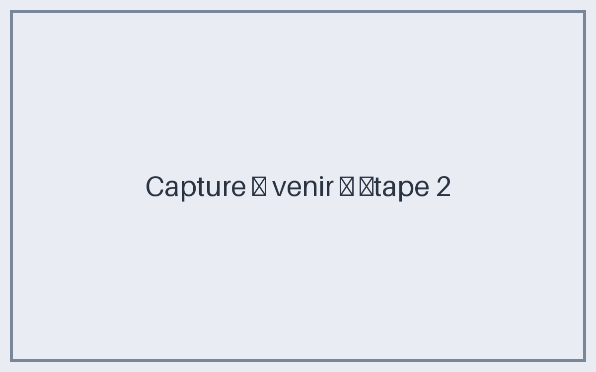
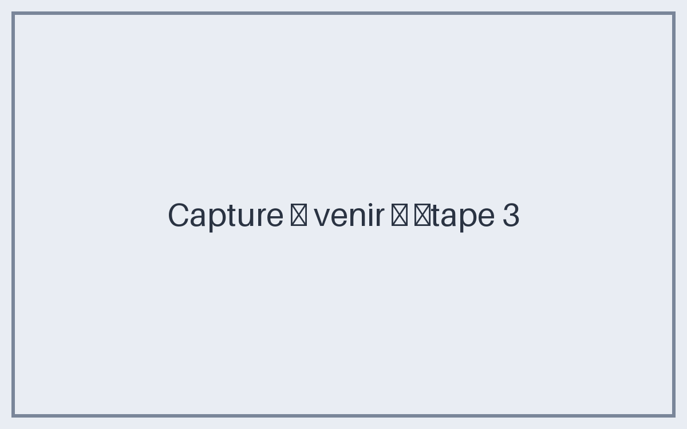

Budget Guard
Budget Guard affiche en haut de votre écran la part de votre forfait Claude que vous avez déjà utilisée cette semaine.

1. Double-cliquez sur Budget Guard. macOS refuse de l’ouvrir la première fois : c’est normal.

2. Ouvrez Réglages Système > Confidentialité et sécurité, descendez et cliquez sur « Ouvrir quand même ».

3. Confirmez. Budget Guard vous guide ensuite.
Nécessite macOS 13 ou plus récent.